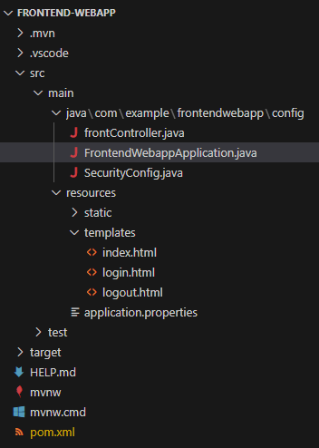
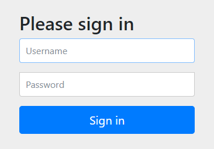

認証機能の実装
ここでは、マイクロサービスにおけるフロントエンドに相当する認証機能を持ったアプリケーションを作成する。
1. Spring Initializr
動作環境
Java: 17
SpringBoot: 3.2.0
dependencies
spring-boot-starter-security
spring-boot-starter-thymeleaf
spring-boot-starter-web
2. ディレクトリ構成変更
configディレクトリを作成し、起動クラスと設定クラスをまとめて格納する。設定クラスが散らばることがないので良い。
以下のようなフォルダ構成でファイルを作成していく

3. ログイン・ログアウト機能の実装
3-1. ログインページを表示してみる
dependenciesにてspring-boot-starter-securityを指定していれば、そのまま起動するだけでログイン・ログアウト機能が使える。

ユーザ名：
userパスワード：起動ログの中に記載されている。以下のようなログが出力されている。
Using generated security password: 827bc10f-d2e7-426a-9bca-71a10e399f74
ただし、ログインしてもログイン後のページがないので、Whitelabel Error Pageが表示されるだけ。

3-2. .html作成
ログインページ、ログイン後のページ、ログアウトページを作成する。
ログインページresources/templates/login.html
<!DOCTYPE html>
<!-- Thymeleafを有効化 => th:XXXX という属性を各タグに追加することで利用可能 -->
<html xmlns:th="http://www.thymeleaf.org">
<head>
<title>ログインページ</title>
</head>
<body>
<h1>Microservice WebApp Login</h1>
<!-- URLパラメータに「error」が含まれていたら、メッセージ出力 -->
<div th:if="${param.error}">
<p>ユーザー名もしくはパスワードが違います</p>
</div>
<!-- ユーザ名・PWをサーバへ送信するためのForm -->
<!-- submitボタンが押下された時のaction（URLパス`/login`へ`post`する）※@はthのリンク記法 -->
<!-- `action="#" はThymleafが有効化されていれば上書きされる -->
<form action="#" th:action="@{/login}" method="post">
<div>
<label for="usernameInput">ユーザ名</label>
<input type="text" id="usernameInput" name="username">
<!-- name="username"はSecurityConfig.javaにてフィールド名指定を合わせる必要がある -->
</div>
<div>
<label for="passwordInput">パスワード</label>
<input type="password" id="passwordInput" name="password">
<!-- name="password"はSecurityConfig.javaにてフィールド名指定を合わせる必要がある -->
</div>
<div>
<button type="submit">ログイン</button>
</div>
</form>
</body>
</html>
ログイン後のページresources/templates/home.html
<!DOCTYPE html>
<html xmlns:th="http://www.thymeleaf.org">
<head>
<title>Welcomeページ</title>
</head>
<body>
<div>Successful Login!</div>
<ul>
<li><a href="./logout.html" th:href="@{/logout}">ログアウト</a></li>
</ul>
</body>
</html>
ログアウトページresources/templates/logout.html。ログアウトボタンを押下するとログアウトして、login.htmlに飛ばされる。
<!DOCTYPE html>
<html xmlns:th="http://www.thymeleaf.org">
<head>
<title>ログアウトページ</title>
</head>
<body>
<h1>Microservice WebApp Logout</h1>
<form action="#" th:action="@{/logout}" method="post">
<div>
<button type="submit">ログアウト</button>
</div>
</form>
</body>
</html>
3-3. frontController.java作成
login.htmlとhome.htmlとlogout.htmlを表示させるコントローラを作成する
package com.example.frontendwebapp.config;
import org.springframework.stereotype.Controller;
import org.springframework.web.bind.annotation.GetMapping;
@Controller
public class frontController {
@GetMapping
public String home(){
return "home";
}
@GetMapping("/login")
public String showLogin(){
// Thymeleafを利用しているため、記載で`/resources/templates/login.html`をreturnする
return "login";
}
@GetMapping("/logout")
public String showLogout(){
return "logout";
}
}
3-4. SecurityConfig.java作成
SpringSecurityの挙動をカスタムする
package com.example.frontendwebapp.config;
import org.springframework.context.annotation.Bean;
import org.springframework.context.annotation.Configuration;
import org.springframework.security.config.annotation.web.builders.HttpSecurity;
import org.springframework.security.config.annotation.web.configuration.EnableWebSecurity;
import org.springframework.security.web.SecurityFilterChain;
@Configuration
@EnableWebSecurity
public class SecurityConfig {
// 戻り値がBeanに登録される。BeanとはDIコンテナに登録されるオブジェクトのこと。結果として任意の場所でAutowiredできる。
@Bean
protected SecurityFilterChain configure(HttpSecurity http) throws Exception {
http
.authorizeHttpRequests((requests) -> requests
.requestMatchers("/login/*").permitAll() // "/login"は認証不要
.anyRequest().authenticated() // その他のリクエストは認証が必要
)
.formLogin((form) -> form // 認証方式はformログイン
.loginPage("/login") // 認証ページは"/login"
.permitAll()
)
.logout((logout) -> logout.permitAll()); // ログアウト機能を有効化し、すべてのユーザがログアウト可能
return http.build();
}
// @Bean
// public PasswordEncoder passwordEncoder() {
// return new Pbkdf2PasswordEncoder();
// }
// userDetailsServiceやpasswordEncoderについてはAutowiredできるものがあれば、自動でAutowiredして利用してくれるので不要。
// userDetailsServiceはCustomUserDetailsServiceの中で@ServiceアノテーションをつけてServiceとしてDIコンテナに登録しているので、Springは勝手に読み取って使ってくれる
// passwordEncoderについても同様に、PasswordEncoderConfigの中で@BeanをつけてDIコンテナに登録しているので、Pbkdf2PasswordEncoderを自動で使ってくれる
}
3-5. 動作確認
ここまでで、ログイン・ログアウト機能が実装できたことになるので、動作確認をしてみる。
4. ユーザ情報の管理
これまでは、デフォルトユーザuserとデフォルトパスワード（Spring起動時に自動で生成されるランダムパスワード）を使ってログインしていたが、通常は外部データベース等でユーザ情報は永続化される。
SpringSecurityが提供するインターフェースとして利用するのが以下の2つ
UserDetails：ユーザ名/パスワード/権限 などの情報を保持する
UserDetailsService：UserDetailsを取得するメソッドを持つ（loadUserByUsername）